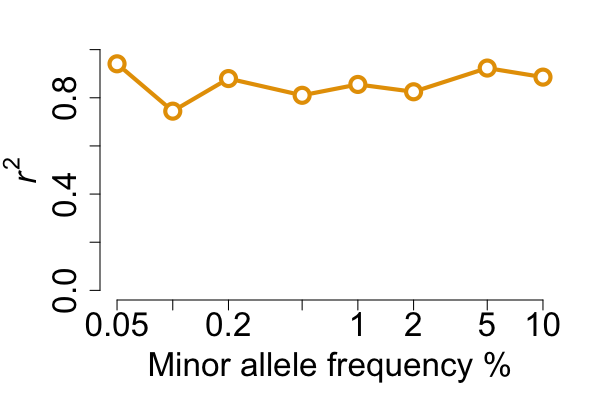

The vcfppR package implements various powerful functions for fast genomics analyses with VCF/BCF files using the C++ API of vcfpp.h.
- Load/save content of VCF/BCF into R objects with highly customizable options
- Visualize and chracterize variants
- Compare two VCF/BCF files and report various statistics
- Streaming read/write VCF/BCF files with fine control of everything
-
Paper shows vcfppR is 20x faster than
vcfR. Also, much faster thancyvcf2
Installation
## install.package("vcfppR") ## from CRAN
remotes::install_github("Zilong-Li/vcfppR") ## from latest githubURL as filename
All functions in vcfppR support URL as filename of VCF/BCF files.
phasedvcf <- "https://ftp.1000genomes.ebi.ac.uk/vol1/ftp/data_collections/1000G_2504_high_coverage/working/20220422_3202_phased_SNV_INDEL_SV/1kGP_high_coverage_Illumina.chr21.filtered.SNV_INDEL_SV_phased_panel.vcf.gz"
rawvcf <- "https://ftp.1000genomes.ebi.ac.uk/vol1/ftp/data_collections/1000G_2504_high_coverage/working/20201028_3202_raw_GT_with_annot/20201028_CCDG_14151_B01_GRM_WGS_2020-08-05_chr21.recalibrated_variants.vcf.gz"
svfile <- "https://ftp.1000genomes.ebi.ac.uk/vol1/ftp/data_collections/1000G_2504_high_coverage/working/20210124.SV_Illumina_Integration/1KGP_3202.gatksv_svtools_novelins.freeze_V3.wAF.vcf.gz"
popfile <- "https://ftp.1000genomes.ebi.ac.uk/vol1/ftp/data_collections/1000G_2504_high_coverage/20130606_g1k_3202_samples_ped_population.txt"
vcftable: read VCF as tabular data
vcftable gives you fine control over what you want to extract from VCF/BCF files.
Read SNP variants with GT format and two samples
library(vcfppR)
res <- vcftable(phasedvcf, "chr21:1-5100000", samples = "HG00673,NA10840", vartype = "snps")
str(res)
#> List of 10
#> $ samples: chr [1:2] "HG00673" "NA10840"
#> $ chr : chr [1:194] "chr21" "chr21" "chr21" "chr21" ...
#> $ pos : int [1:194] 5030578 5030588 5030596 5030673 5030957 5030960 5031004 5031031 5031194 5031224 ...
#> $ id : chr [1:194] "21:5030578:C:T" "21:5030588:T:C" "21:5030596:A:G" "21:5030673:G:A" ...
#> $ ref : chr [1:194] "C" "T" "A" "G" ...
#> $ alt : chr [1:194] "T" "C" "G" "A" ...
#> $ qual : num [1:194] 2.14e+09 2.14e+09 2.14e+09 2.14e+09 2.14e+09 ...
#> $ filter : chr [1:194] "." "." "." "." ...
#> $ info : chr [1:194] "AC=74;AF=0.0115553;CM=0;AN=6404;AN_EAS=1170;AN_AMR=980;AN_EUR=1266;AN_AFR=1786;AN_SAS=1202;AN_EUR_unrel=1006;AN"| __truncated__ "AC=53;AF=0.00827608;CM=1.78789e-05;AN=6404;AN_EAS=1170;AN_AMR=980;AN_EUR=1266;AN_AFR=1786;AN_SAS=1202;AN_EUR_un"| __truncated__ "AC=2;AF=0.000312305;CM=3.21821e-05;AN=6404;AN_EAS=1170;AN_AMR=980;AN_EUR=1266;AN_AFR=1786;AN_SAS=1202;AN_EUR_un"| __truncated__ "AC=2;AF=0.000312305;CM=0.00016985;AN=6404;AN_EAS=1170;AN_AMR=980;AN_EUR=1266;AN_AFR=1786;AN_SAS=1202;AN_EUR_unr"| __truncated__ ...
#> $ gt : int [1:194, 1:2] 0 0 0 0 0 0 0 0 0 0 ...
#> - attr(*, "class")= chr "vcftable"Read INDEL variants with DP format and QUAL>100
res <- vcftable(rawvcf, "chr21:1-5100000", vartype = "indels", format = "DP", qual=100)
vcfplot(res, which.sample = 10, ylim=c(0,60), col = 3, pch=19)
vcfcomp: compare two VCF files and report concordance
Want to investigate the concordance between two VCF files? vcfcomp is the utility function you need! For example, in benchmarkings, we intend to calculate the genotype correlation between the test and the truth.
res <- vcfcomp(test = rawvcf, truth = phasedvcf,
stats = "r2", region = "chr21:1-5100000",
formats = c("GT","GT"), setid = TRUE)
par(mar=c(5,5,2,2), cex.lab = 2)
vcfplot(res, col = 2,cex = 2, lwd = 3, type = "b")
res <- vcfcomp(test = rawvcf, truth = phasedvcf,
stats = "pse", setid = TRUE,
region = "chr21:5000000-5500000",
samples = "HG00673,NA10840",
return_pse_sites = TRUE)
#> stats F1 or NRC or PSE only uses GT format
vcfplot(res, which=1:2, main = "Phasing switch error", ylab = "HG00673,NA10840")
Check out the vignettes for more!
vcfsummary: variants characterization
Want to summarize variants discovered by genotype caller e.g. GATK? vcfsummary is the utility function you need!
Small variants
res <- vcfsummary(rawvcf,"chr21:10000000-10010000")
vcfplot(res, pop = popfile, col = 1:5, main = "Number of SNP & INDEL variants")
Complex structure variants
res <- vcfsummary(svfile, svtype = TRUE, region = "chr20")
vcfplot(res, main = "Structure Variant Counts", col = 1:7)
R API of vcfpp.h
There are two classes i.e. vcfreader and vcfwriter offering the full R-bindings of vcfpp.h. Check out the examples in the tests folder or refer to the manual, e.g. ?vcfppR::vcfreader.
library(testthat)
svfile <- system.file("extdata", "sv.vcf.gz", package="vcfppR")
test_that("can change samples name and set genotypes for single sample", {
br <- vcfreader$new(svfile, "", "HG00096")
br$variant()
expect_identical(br$infoStr("SVTYPE"), "DUP")
expect_identical(br$genotypes(F), c(0L, 0L))
br$setGenotypes(c(1L,1L))
expect_identical(br$genotypes(F), c(1L, 1L))
outfile <- paste0(tempfile(), ".vcf.gz")
br$output(outfile)
br$updateSamples("ZZZZZ")
br$write()
br$close()
vcf <- vcftable(outfile)
expect_true(vcf$gt==2)
expect_true(vcf$samples=="ZZZZZ")
})
#> Test passed